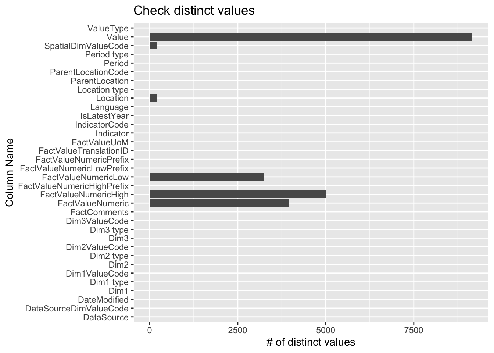

The dataset we use is called modeled exposure to particulate matter air pollution, that aggregates the concentration of the fine particulate matter (PM 2.5) in 194 over the world. In particular, it includes the annual concentration of PM 2.5 in 194 countries, with breakdown for urban and rural areas. The dataset is authored by the World Health Organization (WHO). In general, to obtain estimates of PM 2.5 levels, the concentration of PM 2.5 is measured from fixed-site monitors located within metropolitan areas. The value of PM 2.5 in a given area can be obtained by averaging the measurements of monitors in this area.
Our dataset includes the average annual PM 2.5 concentration on 194 states from 2010 to 2019. Apart from the average value over the country, the dataset also records the averages on four different area types: urban, rural, cities and towns. The dataset consists of 34 variables in total. Not all of them will be valuable to us, but relevant features include country, location (continent), period (year), area type (detailed below), and value (PM 2.5 concentration). There are 9450 observations, each recording the average annual concentration of PM 2.5 for a specific area type (urban, rural, cities, towns, total) of one of the 194 states in the world.
We obtain the data from the WHO official website. A CSV file can be downloaded from this link. The file is ready-to-use, requiring only a “read.csv” function to be loaded into RStudio. We will perform data cleaning (eliminating redundant variables and dealing with NAs) and analysis using this file.
2.2 Research plan
The data provides us with comprehensive information about the mean, minimum, and max PM2.5 at each residence area type, country, continent from 2010 to 2019. Here are some ways that I’m going to use to analyze the data based on our needs.
Pre-processing:
Remove unneeded value and handle NaN value.
Transform the data for later use by applying pivot_longer(), mutate(), etc.
Analyze air quality change over time:
Use time series line chart to plot PM2.5 change from 2010 to 2019, smooth the plot to see the general trend. This can be done in geom-line() function.
Create multiple box charts that shows min, max, mean value for each year and each continent in facet graph using facet_wrap().
Create a histogram that shows the average PM2.5 for each country and continent.
Analyze air quality change over location:
Create a Heatmap using geom_tile to show country differences for PM2.5 and highlight those outliers.
Use bar chart to show the average and range of PM2.5 per continent and country.
Analyze air quality change over resident type (urban, rural, cities, towns):
Visualize the resident type difference per continent by evaluating the average PM2.5 in the facet graph using ggplot and facet_wrap().
Plot the average PM2.5 per continent per resident type as a scatter plot to show if the PM2.5 are significantly different across all resident types.
Create a ggalluvial plot over each resident type and year to show the value change for each resident type.
Putting it all together, there are 3 dimensions that we are going to analyze the data, at the end, based on what we observe from the visualizations above, we will use any package that we learned from class to dive deeper into the detail to analyze the abnormality or general trends to validate our hypothesis and make the analysis comprehensive.
2.3 Missing value analysis
Let’s look at our data and understand it. We only have 1 dataset with 34 columns and 9450 rows. We first check if there are any columns that have no useful information for our analysis and select the ones that are useful for us.
The second step is to check if the remaining columns have any missing or incorrect values and adjust them. Here are the breakdown steps:
Code
# importlibrary(readr)library(dplyr)
Attaching package: 'dplyr'
The following objects are masked from 'package:stats':
filter, lag
The following objects are masked from 'package:base':
intersect, setdiff, setequal, union
── Column specification ────────────────────────────────────────────────────────
Delimiter: ","
chr (14): IndicatorCode, Indicator, ValueType, ParentLocationCode, ParentLo...
dbl (4): Period, FactValueNumeric, FactValueNumericLow, FactValueNumericHigh
lgl (15): IsLatestYear, Dim2 type, Dim2, Dim2ValueCode, Dim3 type, Dim3, Di...
dttm (1): DateModified
ℹ Use `spec()` to retrieve the full column specification for this data.
ℹ Specify the column types or set `show_col_types = FALSE` to quiet this message.
Code
# count distinct valuesdistinct_counts <- data %>%summarise_all(n_distinct)long_data <-pivot_longer(distinct_counts, cols =everything(), names_to ="ColumnName", values_to ="DistinctCount")# plot the number of distinct values per column in our datasetggplot(long_data, aes(x = ColumnName, y = DistinctCount)) +geom_bar(stat ="identity") +labs(x ="Column Name", y ="# of distinct values", title ="Check distinct values")

We can see a lot of columns have a few distinct value, let’s check if they equals 1 or 0, if yes, then we may need to remove these columns since they don’t contribute to our analysis.
# A tibble: 22 × 2
ColumnName DistinctCount
<chr> <int>
1 IndicatorCode 1
2 Indicator 1
3 ValueType 1
4 Location type 1
5 Period type 1
6 Dim1 type 1
7 Dim2 type 1
8 Dim2 1
9 Dim2ValueCode 1
10 Dim3 type 1
# ℹ 12 more rows
After double-checking our dataset, we found these data could be removed. We then check the NaN values of the rest of the columns.
Code
# check for NaNselected_columns <-setdiff(colnames(data), insignificant_data$ColumnName)selected_data <- data %>%select(all_of(selected_columns))selected_data
# A tibble: 9,450 × 12
ParentLocationCode ParentLocation SpatialDimValueCode Location Period
<chr> <chr> <chr> <chr> <dbl>
1 AFR Africa KEN Kenya 2019
2 AMR Americas TTO Trinidad and To… 2019
3 EUR Europe GBR United Kingdom … 2019
4 AMR Americas GRD Grenada 2019
5 AMR Americas BRA Brazil 2019
6 EUR Europe DNK Denmark 2019
7 EUR Europe RUS Russian Federat… 2019
8 EUR Europe ESP Spain 2019
9 AMR Americas GRD Grenada 2019
10 AMR Americas GRD Grenada 2019
# ℹ 9,440 more rows
# ℹ 7 more variables: IsLatestYear <lgl>, Dim1 <chr>, Dim1ValueCode <chr>,
# FactValueNumeric <dbl>, FactValueNumericLow <dbl>,
# FactValueNumericHigh <dbl>, Value <chr>